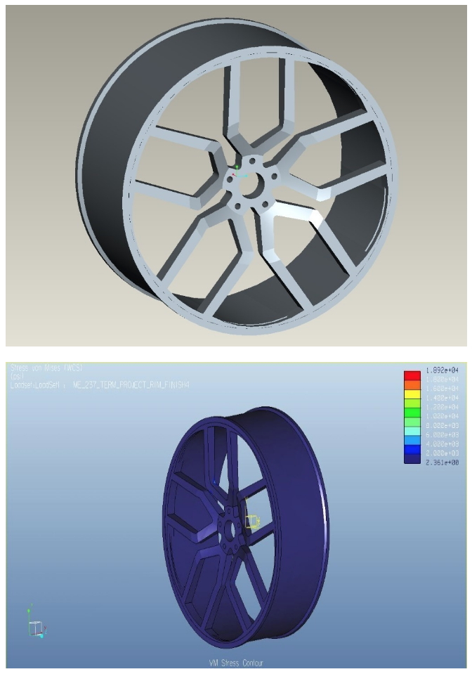
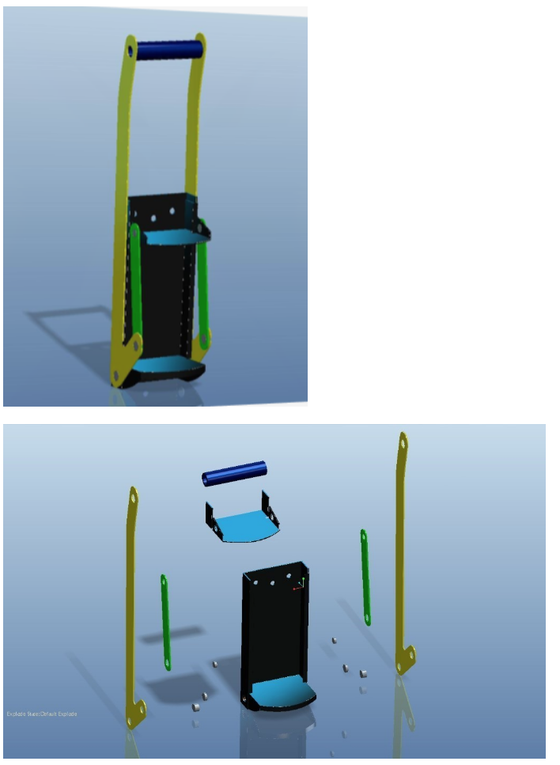

I am a Data Scientist with background in Mechanical Engineering who is inspired by automotive
and techologies.
Previously as a Mechanical Engineer, I developed skills in breaking down problems into
smaller subsets and
implented data into mechanical or hardware design.
With my techincal background and analytical skills, I
take deep dive into data to explore creative ways to
answer my
questions. Thus, I am thrived to make
contributions to improve our future in artificial intelligence.
Outside of professional work, you can find me taking part of another culture somewhere in
the world, snowboarding down a slope, enjoying a music event, singing karaoke,
hiking through nature, playing badminton or shooting basketball. Also, I can simply be at
home enjoying a glass of
wine with a book, watching movies, browsing on new technologies or flight deals.

Car Classification with Imagery
Motivation: To mobilize car research experience for car buyers and sellers, given
mobile device usage has surpassed 53% (Autotrader). This application will allow buyer/seller to
upload a car
image and it will return relevant information about the car.
The model is built on neural network with Tensorflow/Keras and achieved accuracy of 98%.
Currently limited to 4 models, Jeep Renegade, Jaguar F-Type, BMW i8 and BMW M4, while it is
still in development.
Client Project: Flood Detection with Imagery (Flood Bank)
Motivation: As natural disaster is happening and impacting people's lives, can we use images to
detect severity of the flood to allow emergency managers and those who may be impacted to get
an early preparation?
In a group of 3, without prior knowledge working with images at the time, we decided to take on
the challenge to
execute this concept. We built a web scraper tool to collected flood images. Then, we built a binary
classification model and a flood
depth detection model. In conjunction, they can filter a large collection of images to flood images
and
then approximate flood depth for those images.
Even though the current accuracy is about 68%, this project is still in development for
improvements.
NLP Classification between BMW E46 & E90

Goal: Use NLP to classify subreddit post between BWM E46 & E90.
Used PushShift's API to gather around 2000 posts each for E46 and E90. Cleaned the posts to exclude
HTML artifacts, links and punctuations. It resulted in total of 2400 posts. The posts were used
into multiple classification models with CounterVectorizer and TfidfVectorizer. Classification
models
consisted of Logistic Regression, KNearest Neighbor, Navies Bayes Mulitinomials and Decision Trees.
The best model was Logistic Regression with CounterVectorizer at about 86% and TfidfVectorizer at
about 85%.
Kaggle: Predicting House Prices (Housetradamus)

Goal: Given a set of features of a house, such as location, lot area, can we predict the house
price in
Ames, Iowa?
With the given 80+ house features, not every features will have a significant impact
on house prices. Thus, I used EDA to clean and extract features with important correlation.
These features were used in a Linear Regression model. I also incorporated regularization with Ridge
and LassoCV to reduce mean square error. As the result, the best model with Lasso achieved 18.611K
MSE in private leaderboard, which ranked 2nd among my class and 4th within General Assembly Data
Science Classes.
Scaled model of an airplane with a special design mount and rod at the tail for better rotation
during wind tunnel testing.
Designed with Creo2.0.
Calibration assembly to mount on a tilt rotor swashplate assembly for wind tunnel testing.
Designed with Creo2.0.
Tamaya Car assembly.
Modeled with SolidWorks.
Exploded View of Tamaya Car
Modeled with SolidWorks.

Designed a aluminum rim and analyzed it strength for a 2500lbs force.
Maximum stress of 19kpsi located at the inner edge near the center of the rim with a safety factor
of
about
2.
Modeled and Simulated with Creo2.0
Abstract rim design with rim spoke as a sword, inspired by a Hong Kong animate 'Wind Cloud'.
Modeled with SolidWorks.

Abstract rim design inspired by a combustion chamber.
Modeled with SolidWorks.
Abstract carbon fiber rim with spokes as springs and struts.
Modeled with SolidWorks.
Modeled a suspension setup to test for vertical acceleration under different forces, spring
stiffness
and
damping ratio.
Modeled and Simulated with Creo2.0.

Modeled a can crusher to see the relationship between rotational velocity at the handel to the
linear veolcity of the plate.
Modeled and Simulated with Creo2.0.
©rich808.github.io. All rights reserved |
Design: HTML5 UP.